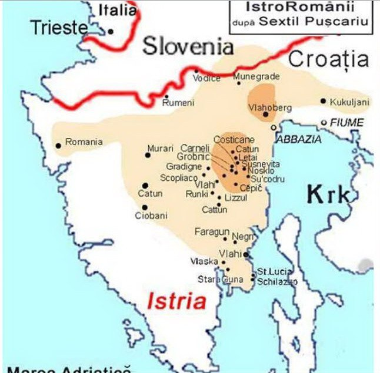

 Pe fondul activității Asociației "Andrei Glavina", înființată la Triest în aprilie 1994, a editării primei publicații periodice în dialect istroromân de către Dr. Petru Rațiu, a participării la numeroase Congrese internaționale ale U.F.C.E. și ale Consiliului Europei, precum și a organizării la Universitatea din Pola a Simpozionului "Istroromânii ieri, azi, mâine" în martie 2000, cu participare științifică și oficială internațională, existența graiului istroromân, unul dintre cele patru dialecte românești, a ajuns la cunoștința Consiliului Europei.
Ca semnatară a Chartei Europene a limbilor regionale și minoritare (C.E.L.R.M.), Croația se află sub monitorizarea Comitetului de Miniștri al Consiliului Europei. La 12 martie 2008, Consiliul Europei (C.E.) a făcut public Raportul Comitetului său de Experți privind aplicarea de către Croația a C.E.L.M..R., care prevede un mecanism de control pentru evaluarea periodică a aplicării acesteia. În capitolul 2, Raportul Comitetului de Experți, "Evaluări privind aplicarea părților a II-a și a III-a ale Chartei," acesta se referă, în premieră absolută, la dialectul istroromân (subcapitolul 2.1.2, & 48, istroromâna).
Pe baza Raportului oficial al Comitetului de Experți, deputatul din R. Moldova în Adunarea Parlamentară a Consiliului Europei (A.P.C.E.), Vlad Cubreacov, a depus la 17 aprilie 2008 "Proiectul de Rezoluție privind situația culturală dificilă a minorității istroromâne", înregistrat ca document al C.E. cu nr. Doc. 11595, semnat de 34 de deputați din 20 de state membre ale Consiliului, cerând recunoașterea drepturilor lingvistice și culturale pentru comunitatea istroromână, în acord cu standardele europene. Anterior, în vederea aderării Croației la Uniunea Europeană, un pas a fost făcut printr-o decizie a Ministerului croat al Culturii din 27 august 2007 prin care graiurile istroromâne au fost declarate "bun cultural nematerial" și incluse pe Lista bunurilor culturale croate nemateriale protejate. Se tratează de protecția rezervată unor manifestări etno-folclorice, dar nu aceleia a unei limbi, prevăzute de C.E.L.R.M., care prevede, spre exemplu, grădinițe de copii în limba populației minoritare, ore la școală în limba aceleiași populații, emisiuni în graiul acesteia la TV și radio local, etc.
La manifestările în sprijinul populației istroromâne, ca acelea ale "Asociației Decebal" la Triest în anul 2007, și la Sibiu, organizate împreună cu Asociația "Astra" în 2008, prilejuite de expoziția de documente din istoria istroromânilor a doctorului Ervino Curtis, s-a răspuns pe teritoriul croat cu organizarea unui program coordonat de dna. Zvezdana Vrzić, finanțat de autoritățile regiunii Istria, de NYU (Universitatea din New-York), care se bucură și de sponsorizarea TRACE, deși dna. Vrzić nu cunoaște dialectul istroromân sau limba română și în general nici o limbă romanică scrisă și vorbită. În cadrul acestui program a avut loc între 10-12 iulie 2009 la Jeian și Sușnievița un seminar axat pe un proiect întitulat "Ocrotirea limbii vlașchi sau jeianschi" care s-a repetat la 24 iunie 2010, la Sușnievița, consacrat aceluiași proiect al dnei. Vrzić.
De la început se observă că limba este tratată foarte reductiv, fiind retezată de rădăcina și legăturile ei firești cu limba română și aceasta este o tendință – sau un program- care nu poate tutela o limbă în pericol iminent de dispariție, ci numai a o slăbi (anula). În ce constă această "tutelă" sau ocrotire a zisei limbi "Vlașchi sau Jeianschi"? Ea constă în simpla scriere la calculator, "digitalizare", a unor scurte povestiri în graiul "vlașchi" sau "jeianschi" și în editarea unui CD audio, cu un vocabular minim, chemat "limba de saka zi" (limba de fiecare zi). Limba se preconizează a fi scrisă după ortografia croată și s-a creat în acest scop un site pe internet, www.vlaski-zejanski.com și cu aceasta se consideră rezolvată problema limbii!
Site-ul pe internet are patru minuscule compartimente, printre care acela întitulat "Glasovi zajednice" (Vocile comunității), ale unei comunități orientate însă numai spre trecutul recent iugoslav, de o generație, apoi compartimentul tot minuscul, chemat "Nauci" (Știință), în care se vorbește de originea limbii în mod extrem de sumar, din care rezultă doar că nu se știe nimic precis de originea limbii, decât că ar fi ajuns cândva, prin secolul XVI, de undeva "din Balcani."
Documentele care atestă prezența vlahilor (a românilor) la 1181 la râul Tagliamento, la 1321 în insula Krk (Veglia), actele de hotărnicie, "Atti di confinazione", de la începutul secolului XIV în Istria, publicate de Carlo de Franceschi, care atestă prezența unei populații românești, etc., pentru a ne limita foarte, foarte mult, sunt complect ignorate-. Tot ce se recunoaște este totuși, că după toponomastică, etnia "vlahilor" era în trecut mult mai întinsă în Istria. Despre triestinul Ireneo della Croce și celebrul endoetnonim "rumeri" – rumeni cu n rotacizat- și limba acestora, "foarte asemănătoare cu a valahilor de la Dunăre", mărturie scrisă și publicată de Ireneo della Croce la 1698 în "Historia antica e moderna, sacra e profana, della citta’ di Trieste", despre acelea mai vechi ale episcopului Tomasini de la Cittanuova în Istria (1650), sau despre "Jus valachicum" reconfirmat la 1436 de Hanz Frankapan – Giovanni Frangipane- ban de Croația și Knez de Krk (Veglia), nu se menționează nicăieri nimic, cum dealtfel nu se menționează, în timpuri mult mai recente, de "Itinerarul în Istria" a lui Ioan Maiorescu (1857), de scrierile despre limbă ale lui Iosif Popovici, Sextil Pușcariu, Leca Morariu, Traian Cantemir, Matteo Bartoli, Petar Skok, August Kovačec, sau acelea istorice ale lui Franz Miklosich, Konstantin Jirecek, Sextil Pușcariu, Silviu Dragomir, etc.; cum nu se menționează de școala cu ore de predare în dialect și limbă română literară, a lui Andrei Glavina, la Sușnievița, între anii 1919 și 1924.
În acest fel se creează imaginea unui popor al nimănui, fără origine și nume, în afara istoriei, rătăcit cine știe cum pe meleagurile Croației, a cărui identitate este redusă la numele unui sătuc. Ne îndoim că în acest mod se creează condițiile pentru păstrarea și conștientizarea valorii limbei de către populația locală, așa cum afirmă în "programul de tutelă", coordonatoarea acestei acțiuni. Căci în mod subînțeles, fără a o declara pe față, limba este considerată deja moartă și unica perspectivă a ei este mumificarea într-un muzeu, fără perspectivă de limbă vie. Se tratează deci o limbă încă vie, vorbită de vreo 500 de locutori în Istria, și vreo trei ori mai mult în lume, dar în grav pericol de-a dispărea în scurt timp, la fel cum s-ar trata o limbă de mult timp moartă.
Salvarea nu poate consta în a băga fragmente de limbă într-un CD audio pe internet, ci trebuie să fie activă, prin transmiterea, așa cum era până prin anii 1970, de la o generație la alta, astăzi slăbită, și de aceea este nevoie de transmitere vie ajutată și prin grădinițe de copii – căci limba se poate studia, dar nu învăța de copii preșcolari prin internet, ca limba aztecilor-, de un profesor calificat pentru învățarea chiar facultativă a limbii la școală, și încurajarea ei prin emisiuni la TV și radio locale, dacă intențiile de "revitalizare" ale limbii sunt sincere, și nu simplu etnobusiness și ipocrizie.
Drepturile lingvistice ale cetățeanului viu nu pot fi puse pasiv într-un muzeu de antichități, ele trebuie să se manifeste în mod activ, în viața de zi cu zi a comunității. Eforturile Croației, la care trebuie să se asocieze România, căci nu se tratează de o populație fără nume, legături și origine, așa cum este tratată în proiectul sus amintit, "Ociuvanie vlașkog ili jeianskog iezica", ar trebui făcute în sensul bunei credințe și al aplicării legilor europene și al tratatelor bilaterale, în virtutea cărora mica comunitate croată din România, nu este considerată în mod reductiv "carașoveană," ci se bucură de toate drepturile, i se recunoaște o origine și o limbă, are școli finanțate de statul român, etc.
Ne disociem de aceea de încercarea de rupere a graiului istroromân de limba română, de anulare a etnonimului de rumeri – de la romanus, rumân, rumăr -, astăzi legitim exprimat în sintagma istroromâni, și exprimăm opinia că măsurile preconizate care fac tabula rasa de istoria și filologia acestui ram al romanității, reducându-le la nivelul unor persoane fără competență culturală, nu pot fi acceptate de comunitatea științifică și de cea a statelor europene.
Ne disociem, de aceea, de măsurile de fațadă, de "ochii lumii," care riscă să confunde salvarea unei limbi cu înhumarea ei, și cerem în schimb aplicarea standardelor europene."
Raportul este redactat de Asociația culturală istroromână "Andrei Glavina", pentru conformitate Dr. Petru Rațiu, și este destinat uzului Ministerului de externe, Departamentului pentru românii de pretutindeni, a Ambasadorului României la C.E., Dl. Stelian Stoian, a Academiei Române și a instituțiilor de cultură.
February 19, 2011
© 2011 Ziariști Online